Gloria Laker Adiiki Aciro
Founder & Director
Lead Trainer, Partnership & Editorial Lead
Lead Trainer, Partnership & Editorial Lead
Promoting Peace Through Responsible Journalism
Shifting narratives. Building peace. Amplifying grassroots voices in communities where stories matter most.
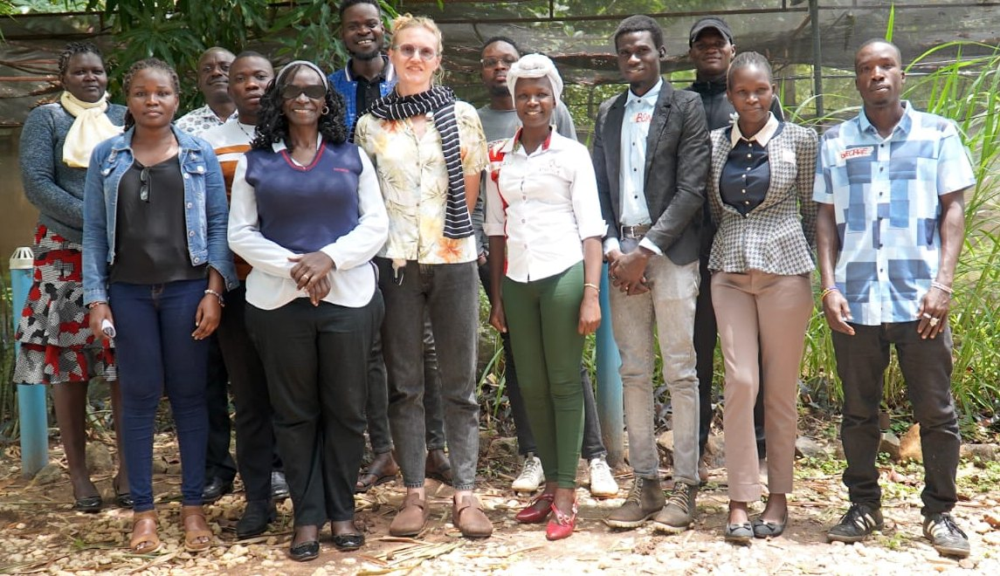
The Peace Journalism Foundation (PJF) is a women and youth-led peace media organisation. PJF is a non-profit, non-partisan organisation with a community office in Omoro District and headquartered in Kampala, Uganda.
PJF was founded in August 2014 by Gloria Laker Adiiki Aciro, former war and peace reporter during the LRA conflict, and Sarah Jane Bradford, a peace and conflict-sensitive journalist, academic and MA graduate of Rhodes University, South Africa.
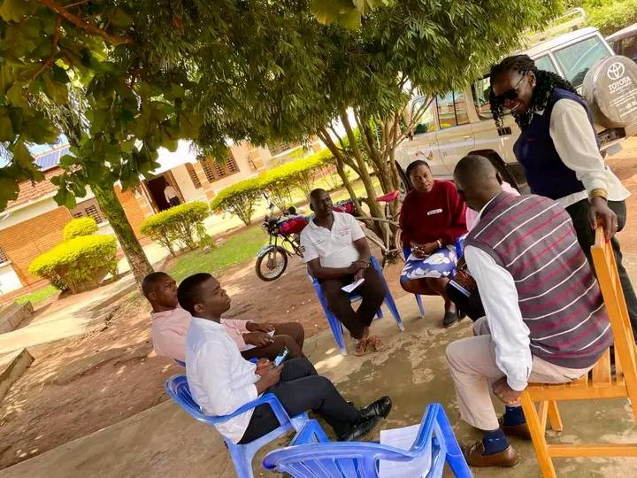
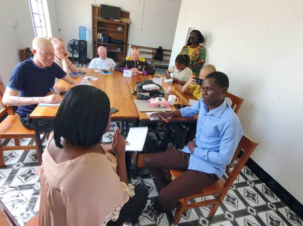
From newsrooms to classrooms, our work connects journalists, communities and researchers across East Africa.
Train young peace journalists across East Africa.
Lead cross-border reporting projects in Uganda, South Sudan and DRC.
Facilitate community peacebuilding through:
Support grassroots, regional and international researchers.
Host the annual Peace Journalism Awards to promote excellence in peace reporting.
PJF founders share practical field experience on peace journalism, conflict reporting and community peacebuilding with students and faculty.
From theory to practice, and constructive feedback.
We listen before we teach. We conduct needs assessments with editors, reporters, leaders and listeners to identify who is missing and what the real conflict is. We adapt Johan Galtung's model of people- and solution-oriented frames, truth and resilience.
Centering individual stories to illuminate systemic realities. We train journalists to report on people, not just events, rebuilding trust between media and communities.
Reforming editorial cultures and newsroom policies so that peace-oriented journalism becomes the professional standard, not the exception across East Africa.
Moving beyond the problem to report on responses, evidence, and innovation. Equipping journalists with frameworks to cover what works, not only what fails.
Building a generation of peace ambassadors through youth poetry clubs, community dialogues, and media literacy programmes that reshape how citizens engage with information.
In 2025, PJF launched its first School Poetry for Peace Club at Kweyo Primary School, in a post-war community in Northern Uganda. The second club will be launched in Nwoya District on 29 November 2026.
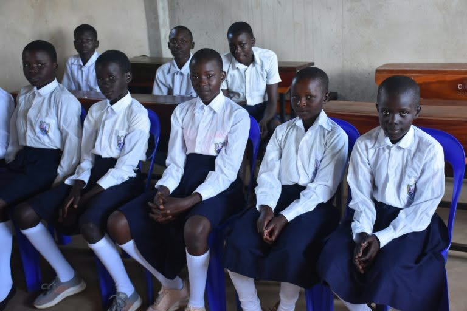
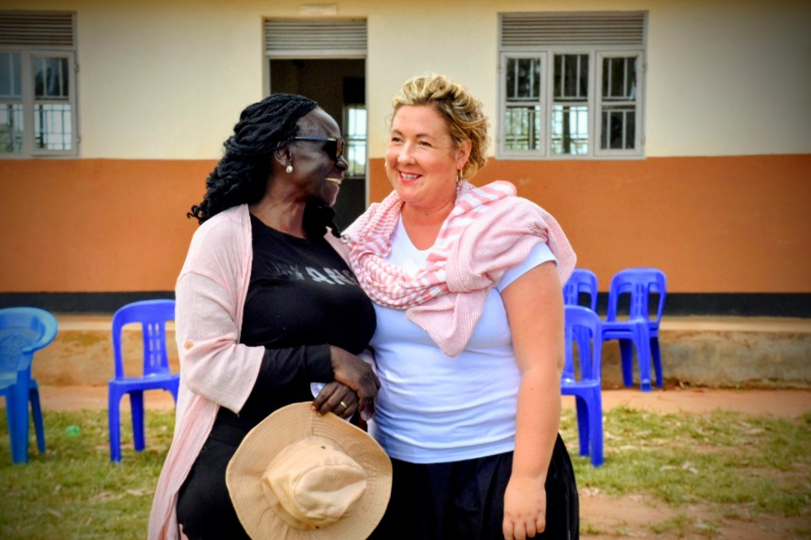
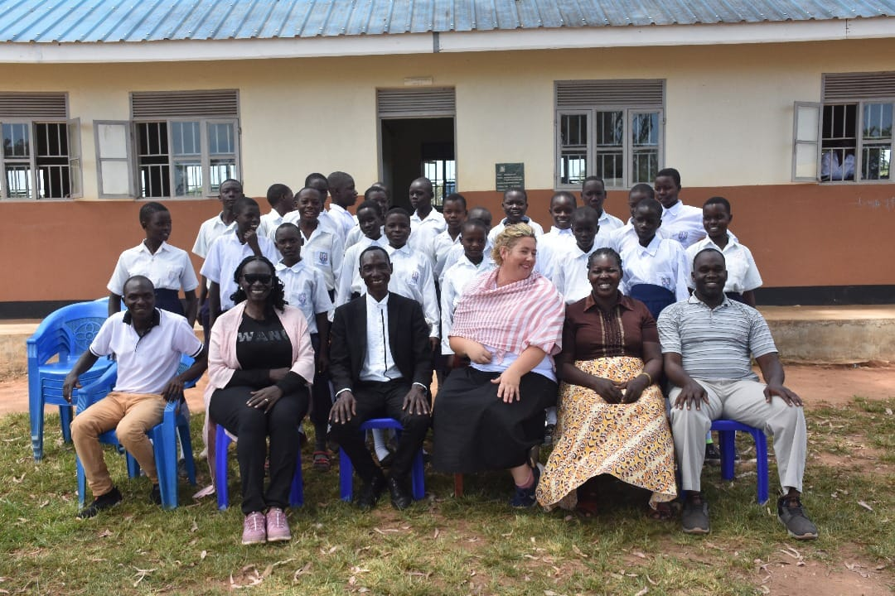
(The Award Winners)
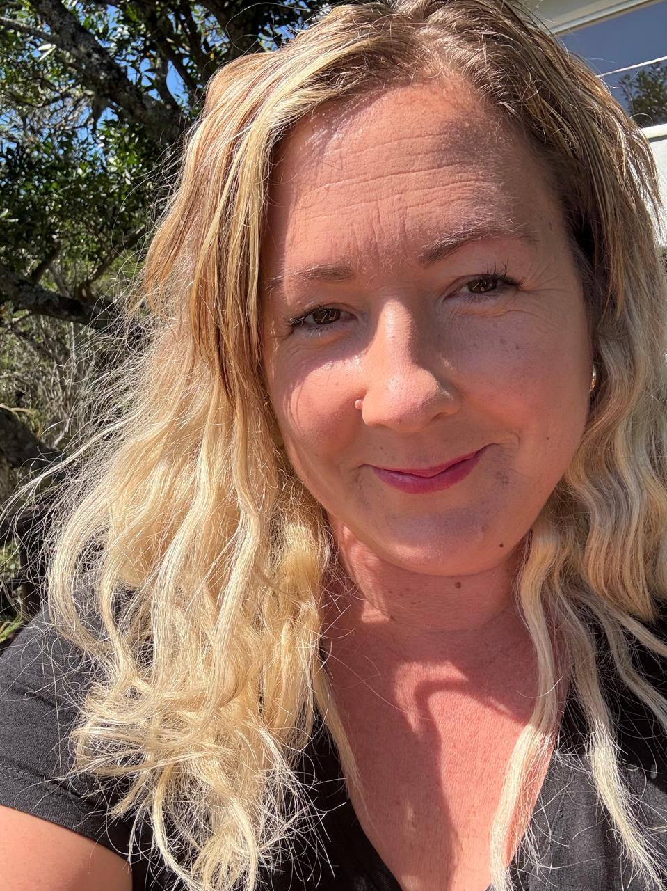
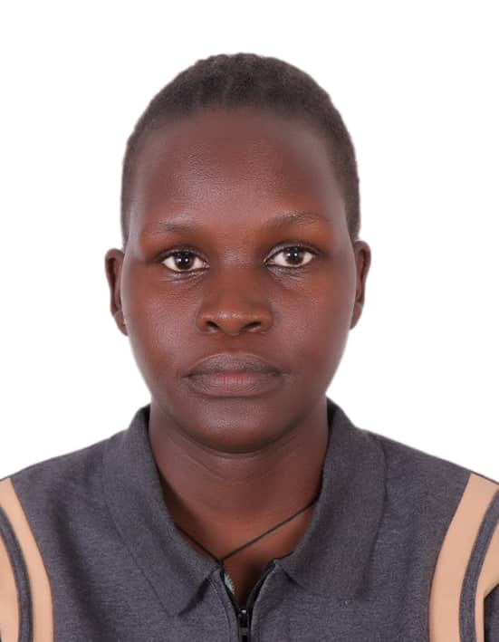
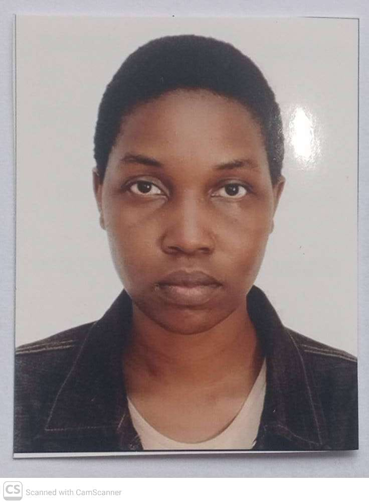

Peace Journalism Foundation (PJF) Uganda East Africa

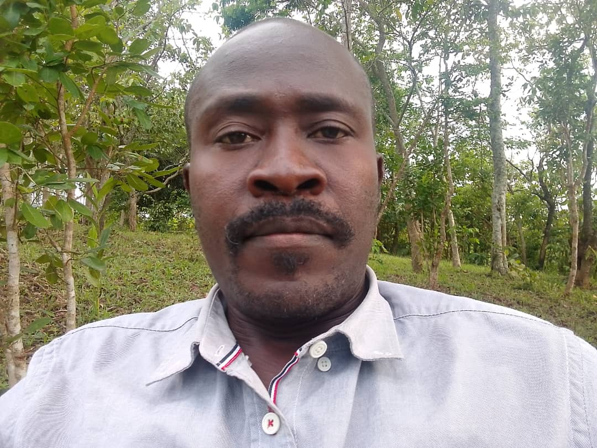
Want to take part, attend or support one of these events? Message us on WhatsApp.
Nwoya District, Northern Uganda.
Two days of peace-focused content and reporting skills.
Celebrating excellence in peace reporting across East Africa.
Direct access to grassroots communities and at-risk youth in post-conflict areas.
Proven track record in preventing election-related hate speech and media-induced violence.
Strong cross-border network across Uganda, South Sudan and DRC.
Unique women- and youth-led model focused on sustainable peace.
Strong and growing academic partnerships for research, learning and innovation.
50% of our work is currently voluntary. With additional funding and partnerships, we can scale our impact.
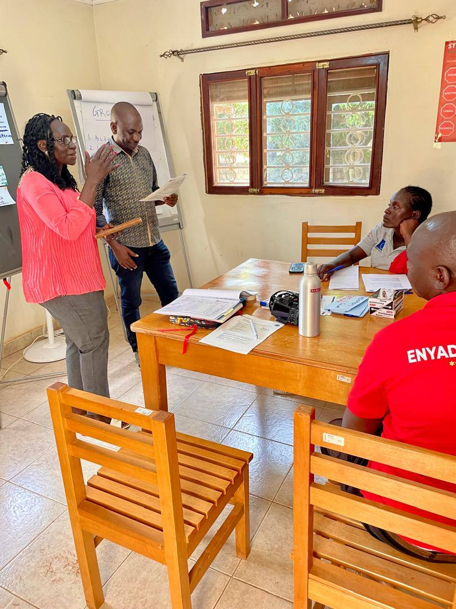
Mentoring 8 young multimedia reporters from South Sudan and Uganda (5 female, 3 male, all under 30) in crisis and transitional reporting.
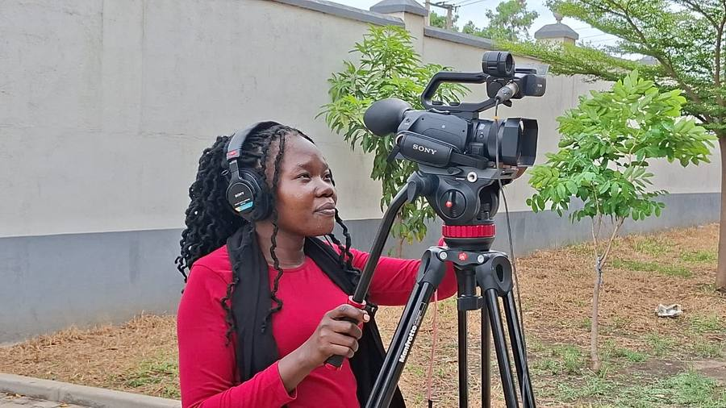
Cross-border reporting and collaboration for the Global Peace Program.
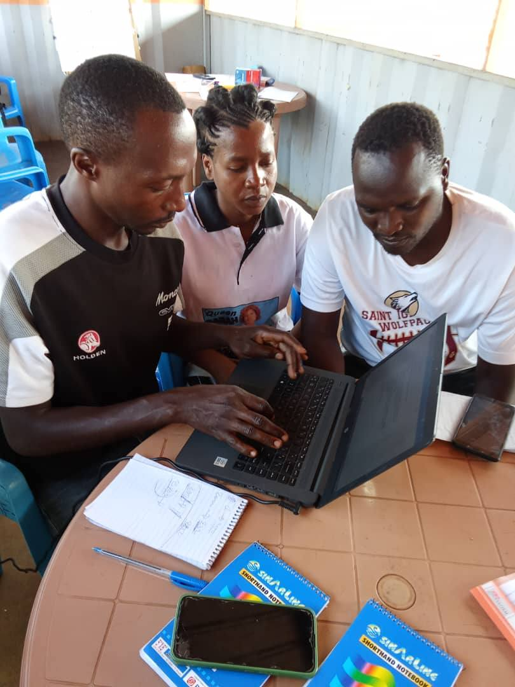
Special news collaboration and coverage for the Peace News Network (PNN).
The Peace Journalism Award was launched on 19 December 2025 at Gwed-G in Gulu City, Northern Uganda, by the Peace Journalism Foundation Uganda East Africa. It was facilitated by the Luxembourg Peace Prize Laureate and former war correspondent during the LRA conflict, legendary Gloria Laker Adiiki Aciro.
For decades, journalism in Northern Uganda has operated in the shadow of war, displacement and post-conflict recovery. Journalists risked their lives to tell stories that held communities together, yet their contribution to peace is rarely recognised. While we celebrate media excellence, courage and resilience, it is important to remember that the media does not work alone. There are individuals and voices with integrity in leadership who have shone and supported the media to achieve its goals.
These awards fill that gap. We honour these leaders and journalism that builds peace, promotes social cohesion, heals trauma, fights corruption and amplifies the voices of the most affected. In our context, a single radio talk show can prevent land violence or reunite a family. Recognising this work is not just celebration, it is peacebuilding.
Unlike traditional awards based on self-application, we use a bottom-up model owned by the people. Nominations come from listeners, viewers, readers and leaders who experience the impact daily. Any community member, cultural leader, woman leader, youth group, civil society organisation or local government can nominate via SMS or WhatsApp. Community validators and partners like Gwed-G verify the impact. Excellence is measured by verifiable change on the ground.
An independent panel of senior editors, peace experts and community representatives verifies all nominations.
We make peace visible by celebrating those who build it through journalism, good leadership and voices that push for dialogue and reconciliation in Northern Uganda.
To read more about our 2025 winners, click here:
https://pjfeastafrica.wordpress.com/2025/12/22/inaugural-peace-journalism-awards-a-thrilling-success/Theme: Building Bridges Through Journalism for Peace and Recovery
After two decades of conflict and recovery, Northern Uganda needs stories that heal and journalism that builds bridges. As we prepare for the 2nd Edition of the Peace Journalism Awards Gala on 18th December 2026, we invite you to nominate journalists, peacebuilders and community heroes shaping our recovery.
The Peace Journalism Awards exclusively celebrates reporting and action that promotes peace, development, accountability and social healing.
Journalists, radio presenters, digital creators, musicians, youth activists, community leaders and peacebuilders working in Northern Uganda and beyond.
Honouring a veteran whose career has advanced peace and justice.
Nominate on WhatsApp ↗For outstanding conflict-sensitive and peace journalism reporting.
Nominate on WhatsApp ↗The most consistent, ethical and impactful journalist of the year.
Nominate on WhatsApp ↗For a radio station that promotes dialogue, reconciliation and community healing.
Nominate on WhatsApp ↗Celebrating a host who uses the microphone to build bridges, not divisions.
Nominate on WhatsApp ↗For a young person under 35 driving grassroots peace and recovery.
Nominate on WhatsApp ↗For best use of online and multimedia to counter hate speech and promote peace.
Nominate on WhatsApp ↗Honouring a leader who has shown transparency and commitment to peace.
Nominate on WhatsApp ↗For a song that has become an anthem for unity, healing and hope.
Nominate on WhatsApp ↗For investigative journalism and activism that exposes corruption as a threat to peace.
Nominate on WhatsApp ↗Independent panel of senior editors and peace experts.
An accolade, certificate of recognition and national and global profiling and connection to our global peacebuilding network.
Submit a short profile, two links to samples of work and your contact via WhatsApp.
Deadline: 25th November 2026. Gala: 18th December 2026
Nominate Today, Celebrate Peace, Build Bridges
Organised by Peace Journalism Foundation Uganda
Contact: +256746279441
The first ever Peace Journalism Awards, held under the theme “Celebrating Peace, Progress and the Power of the Media”, honoured the heroes re-writing Northern Uganda's future.
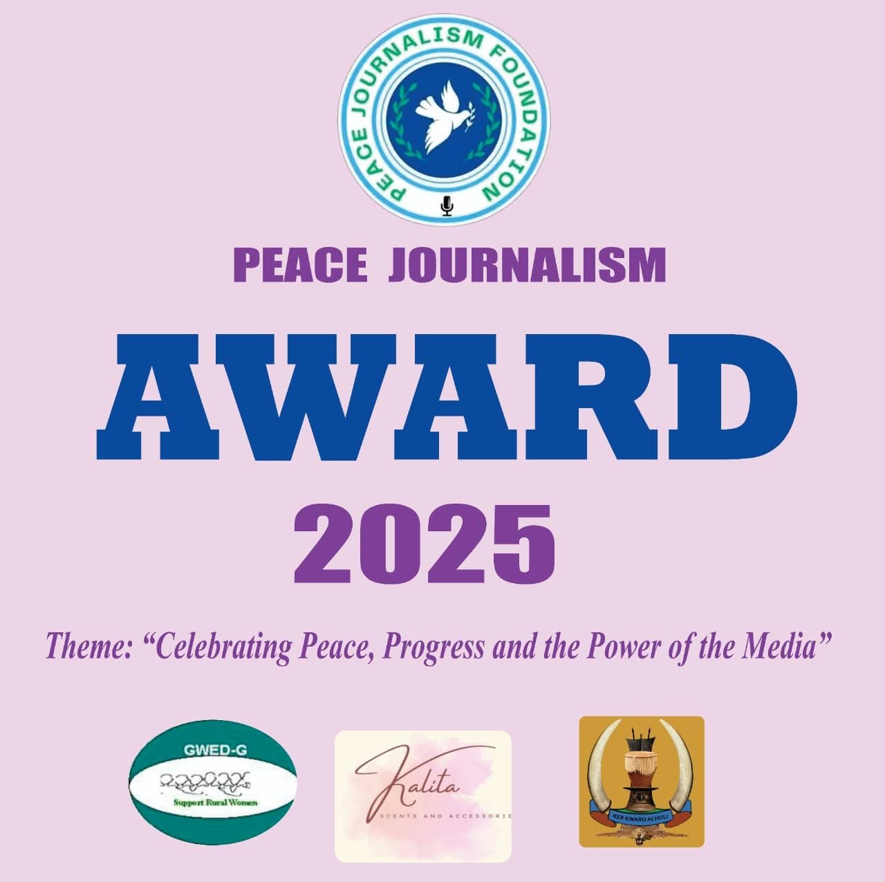
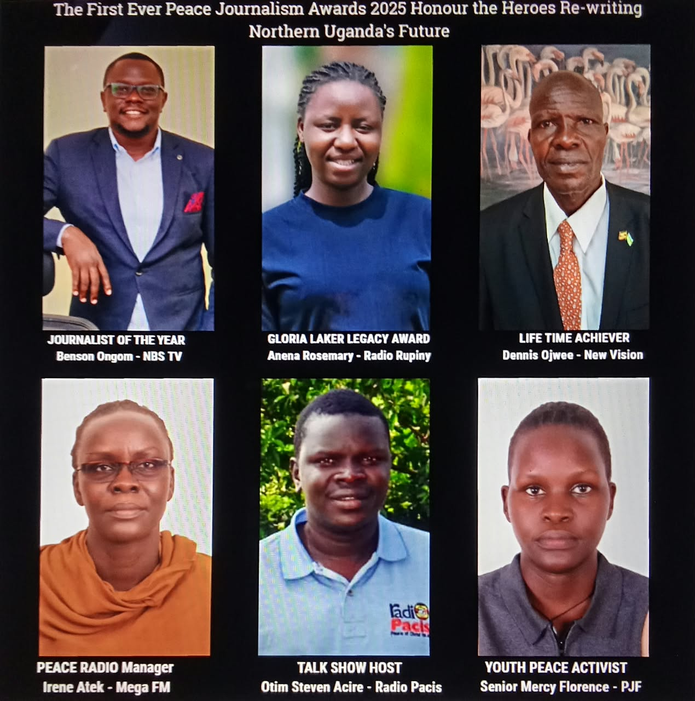
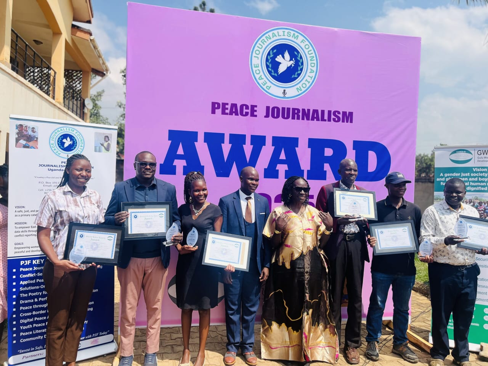
Link to our 2025 winners:
https://pjfeastafrica.wordpress.com/2025/12/22/inaugural-peace-journalism-awards-a-thrilling-success/At PJF, research makes peace journalism and conflict-sensitive reporting work. We go beyond who won or lost to interrogate root causes, impacts, and solutions. Research grounds our reporting in evidence, protects journalists, and turns stories into solutions.
Our agenda is driven by one question: How can media prevent violence and build sustainable peace and development? Rooted in crisis and transition contexts, we examine root causes, human impacts, and solution pathways, not just events. We generate locally grounded, gender-responsive knowledge.
We aim to generate new knowledge in peace and conflict fields such as:
Cross-border reporting, multimedia storytelling, and conflict resolution.
Climate change as a conflict driver, refugees, migration, post-war recovery, pastoralist conflict, and the humanitarian-development-peace nexus from Uganda to the Horn.
Press freedom, safety of journalists in war zones, and ethical media leadership.
Gender and digital media, peacebuilding, transitional justice, and a call to conduct research on sexual harassment in rural-based newsrooms.
Solution journalism and measuring media impact on peacebuilding and reconciliation.
We publish what we do and what others shelve. Our Knowledge Hub publishes peace research reports, thesis findings, policy briefs and conference papers, connecting students and researchers to journalists, policymakers and peacebuilders.
Hosted by PJF for educational purposes. Rights belong to the author.
This thesis examines how female war correspondents navigate gender-specific safety challenges in conflict zones. Based on interviews with 11 female journalists worldwide, it reveals additional risks of harassment, discrimination and cultural limitations, and how they shape reporting and source access.
It highlights gaps in safety training and mental health support and calls for gender-responsive safety policies.
Citation: Gaye, L.Y. (2025). Female War Correspondents and Gendered Safety. VUB.
Read more → View Annexes: Interview Transcripts (PDF) ↗
Hosted by PJF for educational purposes. Rights belong to the author.
An AI-assisted tool in development to detect and flag hate speech in news broadcasts.
A hybrid platform that convenes conflict-affected communities in town halls and on television to dialogue and resolve disputes.
We conduct, supervise and publish research on peace and conflict and coordinate full fieldwork for regional and international researchers across Uganda, East Africa and the Horn, including fixers, travel, trusted drivers, accommodation, airport pick-up and inland trips. All research uses do-no-harm, trauma-informed, and conflict-sensitive methodologies.
We prevent media-induced violence and amplify the voices of the vulnerable and peacebuilders.
From the Great Lakes to the Horn of Africa, our programmes operate in some of the continent's most complex media environments.
"The PJF training completely changed how I approach conflict stories. I now ask what the impact on communities is before considering the drama. That shift has made my journalism more accurate and more humane."
"The fellowship opened doors I did not know existed. I now report on reconciliation processes in eastern DRC with the credibility and skills I gained through PJF. The impact is felt in my community every day."
"PJF's media safety training changed how I work on the frontlines. I knew exactly how to navigate dangerous situations, protect my sources, and continue reporting responsibly. No other programme had given me that."
The latest from our blog. Every story opens on our blog in a new tab.
Every contribution directly funds training, fellowships, research, and community programmes across East Africa.
Training young digital content creators to produce peace-oriented social media content, combating misinformation where it spreads most: online. 25 influencers trained per cohort.
The annual awards recognise journalists producing work that advances peace. Your support funds prizes, the gala, and a visibility campaign that amplifies award-winning stories across the region.
Youth poetry clubs in schools across northern Uganda use creative arts to explore peace, conflict, and identity. Your support trains facilitators and reaches 2,000+ young people each year.
A six-month immersive fellowship placing emerging journalists with mentors, newsrooms, and field assignments. Your contribution directly sponsors one fellow through their entire journey.
Give any amount you like, in UGX. Every shilling helps.
After sending, message us on WhatsApp so we can thank you. Sending from outside Uganda, or want a receipt? Message us on WhatsApp and we will help.
Visit us on our socials
Follow the Peace Journalism Foundation for stories from the field, training updates, awards news and our latest videos.